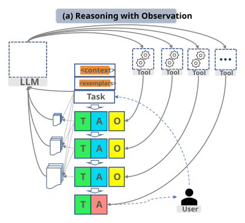
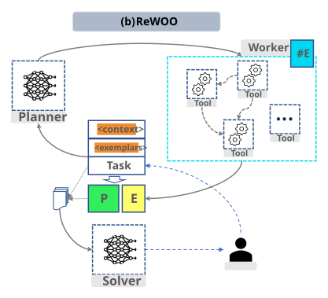

The Workflow Agent
A single ReAct loop handles most one-shot tasks, but three key patterns will push you past it:
- sub-tasks that run in parallel,
- work that decomposes cleanly into a plan written before any tool runs,
- and routing decisions that must not depend on whatever the last tool returned.
This page builds the two named patterns (ReAct vs ReWOO), runs a live parallel research pipeline, wires a triage router whose output is locked to a fixed enum so routing is deterministic, and ends with the factory pattern that stamps out specialists without per-agent boilerplate.
Two patterns that differ in when the model decides
Two named patterns cover most production Workflow Agents. They differ in when the model decides what to do:
ReAct (Reason + Act)
At each step the model reads the latest observation, picks the next action,
runs a tool, reads the new observation, picks again. The agent
reacts to whatever the previous tool call returned, so the path
through tools emerges step by step rather than being decided upfront.
Strong when the path depends on intermediate results. Weak when many steps
could have run in parallel.
Paper: Yao et al., 2022.
ReWOO (Reason Without Observation)
The model writes the full plan upfront in one LLM call, before any tool
runs. A deterministic executor runs every tool, often in parallel. A second
LLM call synthesizes the results. The plan never sees a tool result, so the
model "reasons without observation." Strong when the steps are independent.
Weak when later steps need to react to earlier ones.
Paper: Xu et al., 2023.


When a single loop beats splitting into agents
A Workflow Agent pays off only when the task has independent workstreams. Multi-agent composition adds coordination overhead that a single ReAct loop does not pay. No independent workstreams means the simpler agent is faster, cheaper, and easier to debug.
- One extra LLM call per agent boundary (the supervisor asking "who handles this?" and the worker reporting back)
- A whole extra layer of routing prompts to write and maintain
- More surface area for failures: a crash or malformed message can happen in N places, not one
- Trajectories are harder to read because they fan across agents instead of running down one timeline
Multi-agent is worth that tax when at least one of these holds:
- Specialization matters. Different workstreams need different system prompts, tools, or models. One agent forced into both roles degrades both.
- Parallelism is possible. Two workers run concurrently; one agent cannot. Three independent searches finish in the time of the slowest.
- Context bloat is real. A single agent doing everything accumulates 10000-token context. Specialists stay focused on their slice.
- Failure isolation helps. A crashed worker does not kill the whole task. The orchestrator retries, skips, or routes around it.
Running a ReWOO pipeline against the NVIDIA glossary
ReWOO writes the full plan in one LLM call, runs every tool in parallel without
re-querying the model, then synthesizes in a second LLM call. The cell below
runs this against the NVIDIA glossary (via helpers.webSearch, the ranked glossary search you met in Module 1c):
- Planner. One schema-bound LLM call emits a JSON list of 3-5 search queries.
- Executor. Plain JavaScript. Every query runs concurrently via
Promise.all; no LLM calls. - Synthesizer. A second LLM call reads every result and writes the brief, citing each search by index.
Two LLM calls total, plus N parallel glossary searches. Edit the research goal and watch the planner's query list change.
Routing a ticket to one specialist with a fixed enum
A different shape of multi-agent: not parallel research, but routing. The triage agent classifies the input and hands it to one specialist. The routing decision is deterministic because the classifier is forced to emit one of a fixed enum of categories. The specialist owns its own narrow system prompt and never sees the triage agent's reasoning.
Fanning one shared input out to specialists at once
The ReWOO pipeline in Part 3 was parallel by construction (every query ran concurrently). This cell shows the more common parallel pattern: specialists with different system prompts, the same input fanned out to all of them, all running at once. Three things to watch in the trace:
- Total wall time equals the slowest specialist, not the sum.
- The Gantt chart shows per-specialist duration inside a dashed wall-clock window.
- The shared input is one web-search result, not three. Cost stays bounded as you add specialists.
Declaring specialists from a factory instead of hand-writing each
Each of the four exercises above built a small agent by hand: a system prompt, a tool list, an invocation. Production code does not write that boilerplate every time. The factory pattern parameterises the four moving parts of an agent so you can declare specialists rather than write them:
- Role. A short label that names the agent (used for logs and routing).
- System prompt. The behaviour contract: what the agent does, what it refuses, and how it writes its replies.
- Tools. The list of JSON-Schema-described functions the agent can call, if any.
- Invoke contract. A consistent shape (
specialist.run(input)) that returns the final reply.
CrewAI,
LangChain, and
LangGraph
all expose this factory under different names
(Agent, create_agent, role/goal dataclasses).
The cell below shows the factory in plain JavaScript: two specialists,
an arithmetic tutor and a translator, built from the same four parameters,
run on the same input, with their replies rendered side by side.
Before you continue
- The ReWOO planner in Part 3 emits a JSON list of queries. What is the failure mode if a later query needs a fact from an earlier query's result? Which architecture from Part 2 do you switch to?
- The triage agent in Part 4 has a fixed enum of categories. What should the router do if the model emits a category that is not in the enum? Is the JSON schema enough by itself, or do you also need application-side validation?
- The Part 6 factory parameterises four things (role, system prompt, tools, invoke). What would you add as a fifth parameter to prevent a specialist from drifting into another specialist's domain when the input is ambiguous?
References
- Xu et al., ReWOO: Decoupling Reasoning from Observations (2023). The planner / worker / solver decomposition this module's Workflow Agent implements.
- Wang et al., Plan-and-Solve Prompting (2023). The simpler ancestor: a single LLM call writes a plan, the same LLM executes step-by-step. ReWOO splits planner from executor.
- Madaan et al., Self-Refine: Iterative Refinement with Self-Feedback (2023). The pattern behind iterative multi-pass research: an agent critiques its own output and re-runs until a quality threshold is met.
- LangGraph. The production framework that formalises the workflow / state-machine pattern this module sketches by hand.
Comprehensive list at Going Further · References.
Try it · the triage router, live
Ask a support question. The artifact makes one model call to classify it into a category, routes it to that specialist's system prompt, and streams the answer in that voice. Two calls, one router, exactly the pattern above. This demo uses a customer-support taxonomy (billing, technical, account, other) rather than the IT help-desk enum from the Part 4 exercise; the routing mechanism is identical and only the category set changes with the domain.